Nuestra Historia
Ensamble inmediato
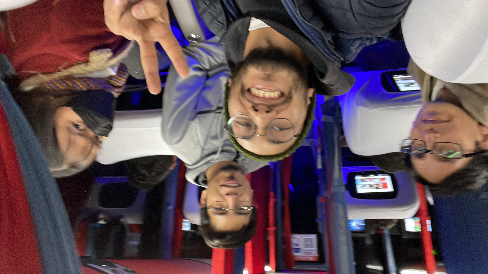
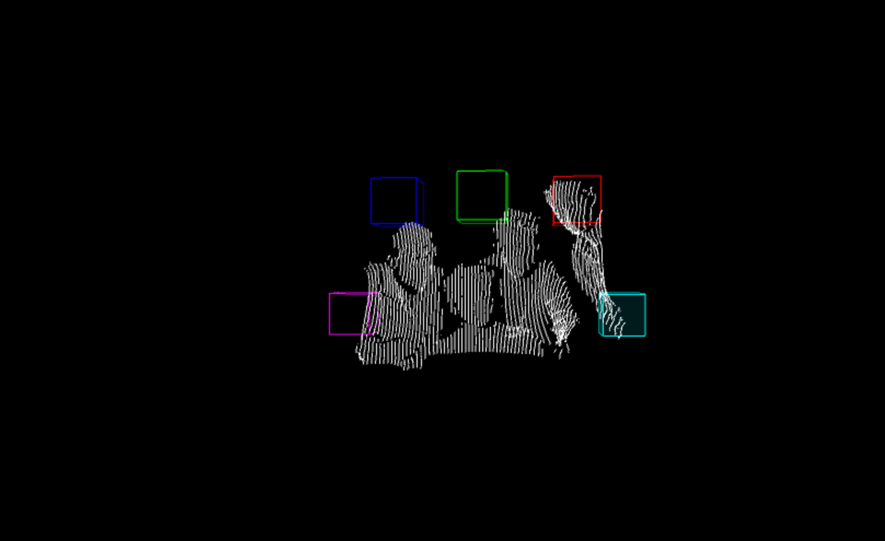
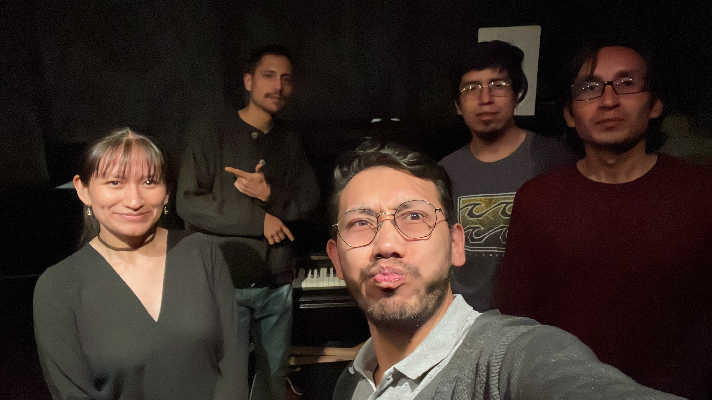

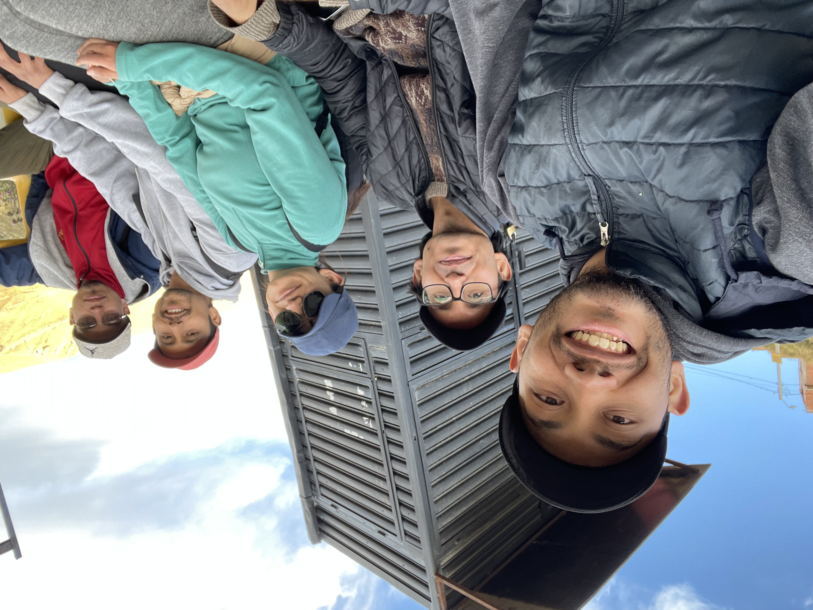

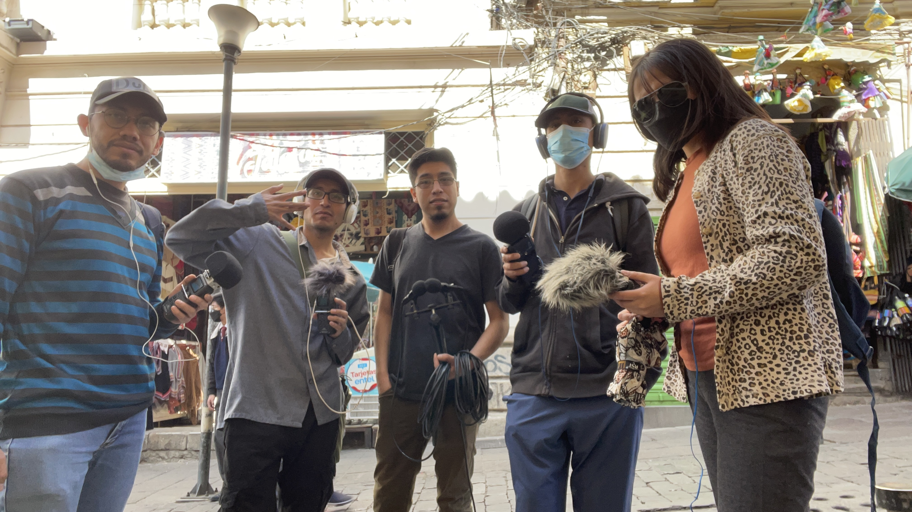
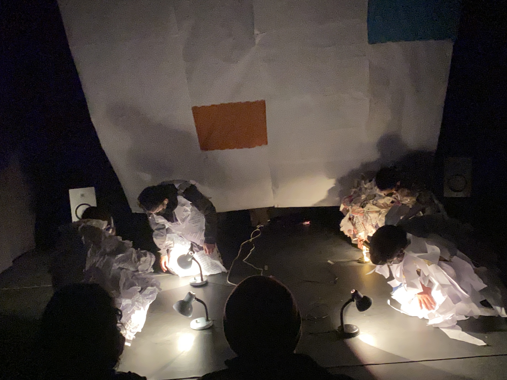
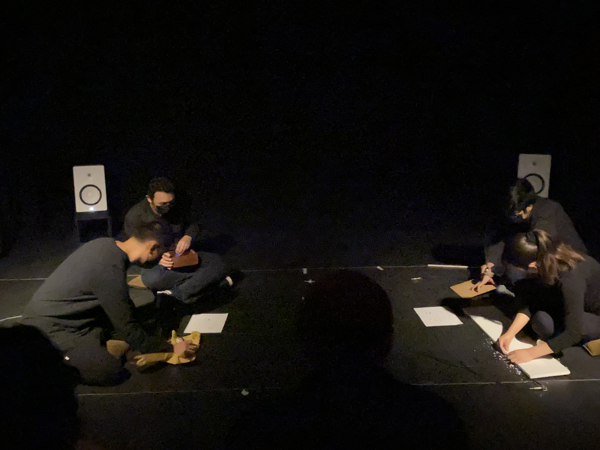
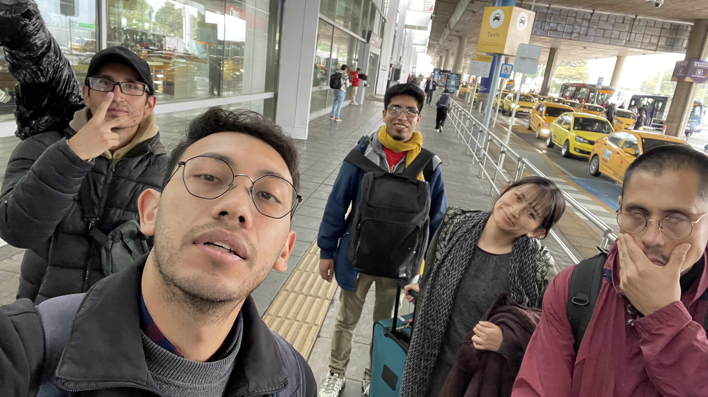
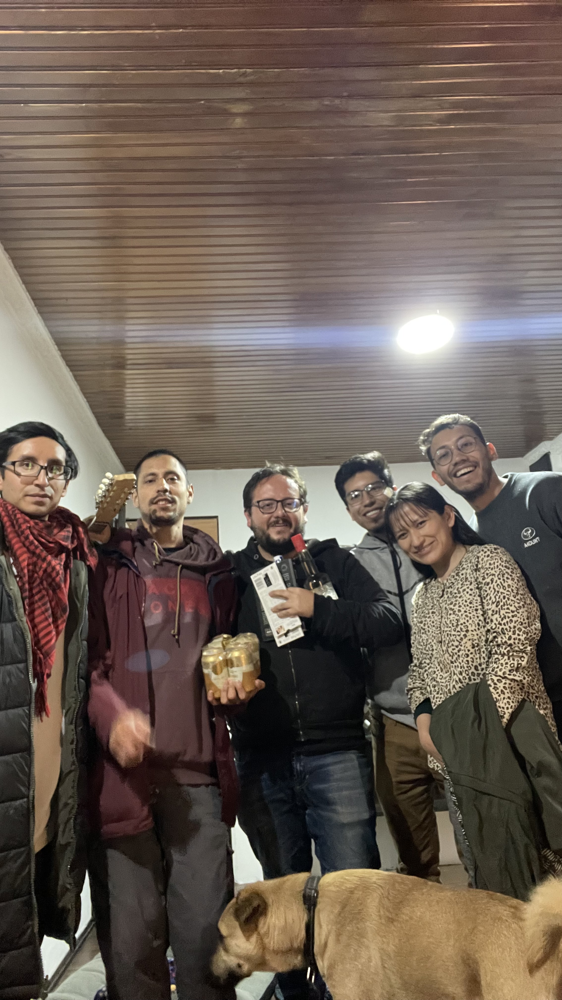
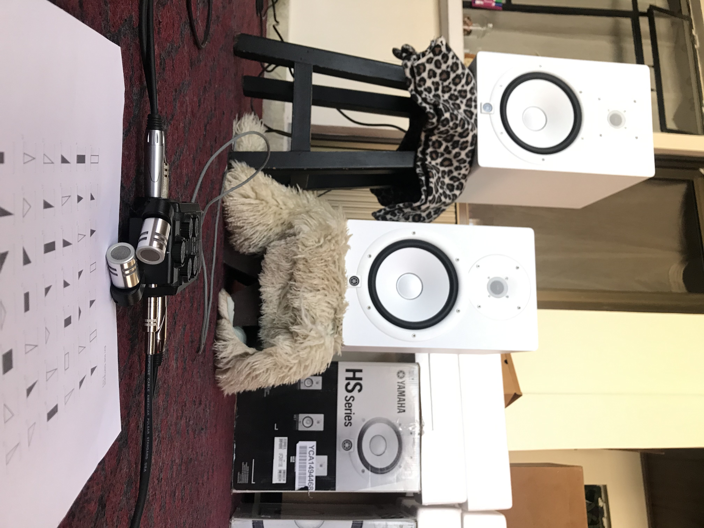
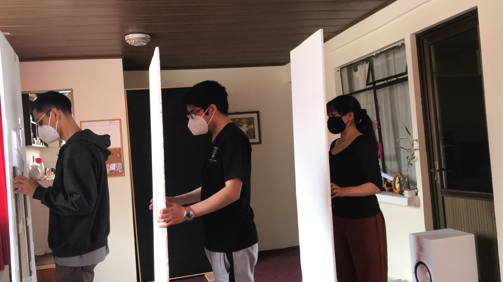
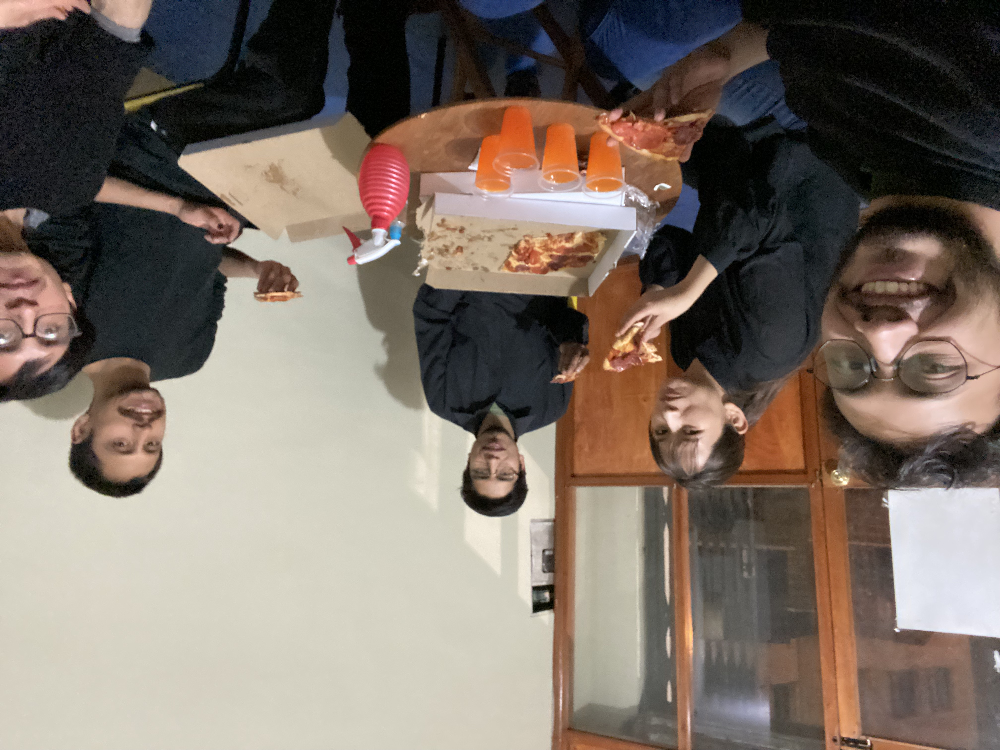
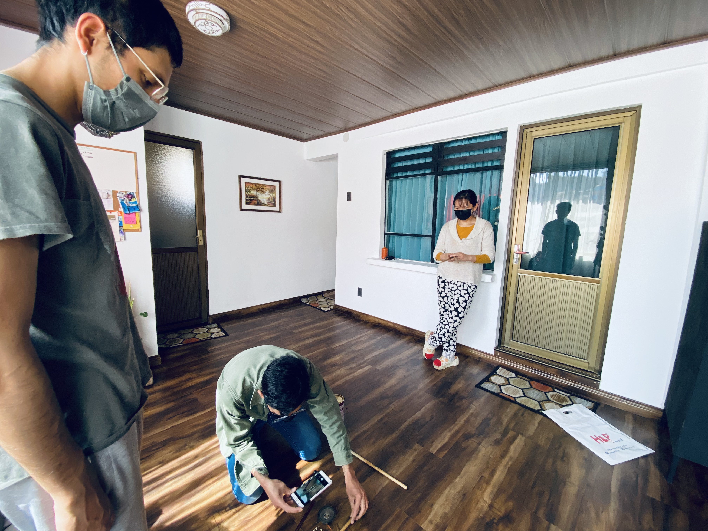
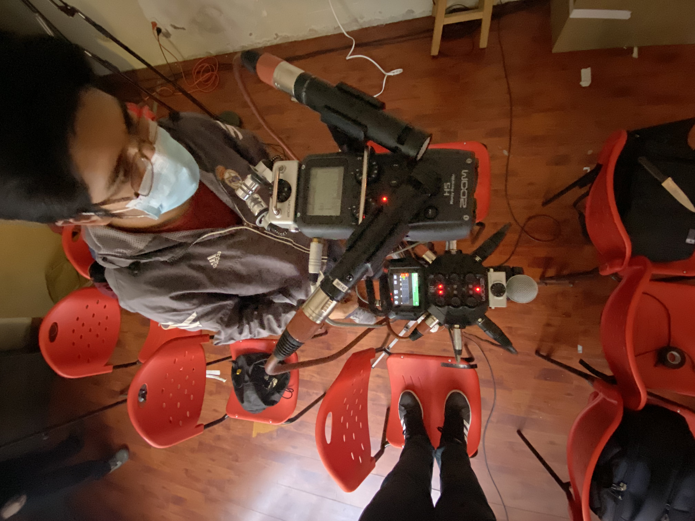
El director dragthoven nos guía desde su gran sabiduría
Haciendo cosas desde 1827
El panorama de la música contemporánea y experimental es un territorio de constante búsqueda, un espacio donde los límites del sonido se desafían día a día. En el corazón de esta exploración nace el Ensamble Inmediato, una agrupación de música experimental de corte estrictamente académico que, a lo largo de cinco años de ininterrumpida labor, ha trazado una de las trayectorias más fascinantes y propositivas de la escena actual. Su historia, sin embargo, no comenzó sobre un escenario iluminado ni entre los aplausos del público, sino en medio del silencio impuesto por uno de los momentos más atípicos de nuestra época: la pandemia global del año 2020. En aquellos meses de confinamiento estricto, cuando el mundo cultural parecía haberse detenido por completo, los compositores Guillermo Leonardini, Jorge Monrroy, Mizky Bernal Miranda, José Ignacio Camacho y Yerko Estevez encontraron en la virtualidad un refugio y un vital punto de encuentro. Lo que los unió inicialmente fue una profunda necesidad intelectual: reunirse a la distancia para desmenuzar, debatir y analizar minuciosamente obras capitales de la música contemporánea. Aquellas largas sesiones de estudio y reflexión acústica no solo sirvieron para sobrellevar el encierro colectivo, sino que terminaron amalgamando las visiones estéticas de estos cinco creadores, tejiendo la red conceptual que daría vida al ensamble. A medida que las restricciones fueron cediendo, aquella energía acumulada en lo virtual exigía materializarse en el espacio físico. Así, en el año 2021, la reflexión teórica dio un salto definitivo hacia la ejecución performática con su esperado concierto debut, bautizado de manera muy reveladora como "Factura-Fractura". Este primer encuentro en vivo frente al público fue una auténtica declaración de principios. En él, el ensamble dejó claro su manifiesto sonoro, cimentado en la experimentación rigurosa, la exploración y la deconstrucción académica. A partir de esa noche, el crecimiento del grupo fue vertiginoso. Durante los años siguientes, el colectivo se embarcó en una intensa agenda de producción, sumando cerca de una docena de conciertos que no solo consolidaron su acoplamiento como músicos de cámara, sino que reafirmaron su identidad escénica. El constante impulso creativo del ensamble rápidamente los llevó a concebir proyectos que desbordaban el formato de recital tradicional. Uno de los momentos más significativos en esta evolución fue el desarrollo de "A través del aire", una ambiciosa iniciativa que logró ser seleccionada y respaldada por el Centro de la Revolución Cultural (CRC). Este proyecto permitió a la agrupación experimentar con el sonido a una escala mucho mayor, habitando espacios y proponiendo una escucha activa que dialogaba directamente con su entorno. Su madurez escénica y conceptual les aseguró un lugar protagónico en los circuitos más exigentes de la región. Durante los últimos tres años, el ensamble ha sido una presencia ineludible en las destacadas Jornadas de Música Contemporánea, organizadas por la Asociación Boliviana de Autores e Investigadores de la Música (ABAICAM). De igual forma, su capacidad para transitar entre la música y el arte sonoro interdisciplinario los llevó a ser parte vital de las dos últimas ediciones de la renombrada Bienal "Sonandes", donde no solo presentaron proyectos de gran envergadura artística, sino que también comenzaron a desplegar su innegable vocación pedagógica impartiendo talleres especializados. El rigor de su propuesta y su dedicación absoluta a la vanguardia no tardaron en cruzar las fronteras internacionales. Uno de los hitos más emocionantes en la historia del ensamble fue su gira a Bogotá, Colombia. Allí, el Ensamble Inmediato tuvo el honor de presentarse en "Matik-Matik", un espacio independiente considerado como un verdadero hito cultural y parada obligatoria para la música de vanguardia en la región andina. La gira, sin embargo, no se limitó a la exhibición artística; fieles a sus raíces analíticas, los cinco compositores fueron invitados por la prestigiosa Universidad Distrital Francisco José de Caldas para dictar una clase magistral, compartiendo su visión con los estudiantes colombianos y cimentando un puente invaluable de intercambio a nivel latinoamericano. Al mirar retrospectivamente este primer lustro de existencia, resulta evidente que el Ensamble Inmediato es mucho más que un grupo de intérpretes tocando partituras complejas. Son una plataforma de pensamiento y transferencia de saberes. Conscientes de la importancia de formar tanto a nuevos creadores como a un público capaz de apreciar los lenguajes de vanguardia, a lo largo de estos cinco años han dictado innumerables talleres, ya sea por iniciativa propia o respondiendo a la invitación de diversas entidades. Destaca especialmente su colaboración sostenida con "Umbral", un reconocido laboratorio de investigación y creación en artes, donde han consolidado su faceta como formadores. Desde aquellos primeros análisis virtuales de partituras en tiempos de aislamiento e incertidumbre, hasta sus aclamadas presentaciones internacionales, la historia del Ensamble Inmediato es el relato inspirador de cinco compositores que transformaron la pausa obligada en un motor de creación, consolidándose hoy como un referente absoluto y vital de la música experimental contemporánea.